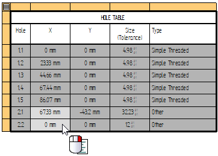

Units tab (Hole Table Properties dialog box)
Use the Units tab in the Hole Table Properties dialog box to set the primary units for displaying numeric hole information in a hole table on a drawing. The property values on the Units tab are stored with saved settings.
Units settings do not pertain to the hole table columns for hole number (or hole ID), origin (or group number), hole count, and hole type.
Primary Units
- Linear
-
The Linear formatting options are applicable to linear distance, size, and XY location in a hole table.
- Units
-
Specifies the unit setting for a linear value.
- Round-off
-
Sets the round-off for a linear value.
Note:This option sets the round-off for all columns in the hole table. However, if you want to use a different round-off for a specific column in the hole table, you can do this using the Format Values dialog box to add property text formatting, /@n. To learn how, see Format property text values.
You also can open the Format Values dialog box to set the round-off, units, and tolerance formatting for one or more selected data cells by selecting the Format button on the Data tab of the Hole Table Properties dialog box, or by selecting the Format Values command on the context menu in direct edit mode, as shown here:

- Angular
-
The Angular formatting options are applicable to angular distance.
- Units
-
Specifies the unit setting for an angular value.
- Round-off
-
Sets the round-off for an angular value.
- Delimiter
-
Specifies the decimal delimiter for the primary units.
- . Period
-
Sets a period as the decimal delimiter.
- , Comma
-
Sets a comma as the decimal delimiter.
- Zeros
-
Specifies whether a zero is on the left or right of the decimal.
- Leading
-
Places a zero to the left of the decimal point if there are no numbers to the left.
- Trailing
-
Places zeros to the right of the decimal point. The number of zeros placed is based on the active setting for Round-off. For example, if the value is .5, and the round-off setting is .1234, the resulting value appears as .5000.
How do I
Create a hole tableChange hole table labels
Define a smart hole table callout column
Hide the hole table origin
Show hole size tolerance
Learn more
Hole tablesAdding hole table columns
Look up more details
Hole Table commandHole Table command bar
Hole Table Properties dialog box
Options tab (Hole Table Properties dialog box)
Hole Number tab (Hole Table Properties dialog box)
Callout tab
Smart Depth tab